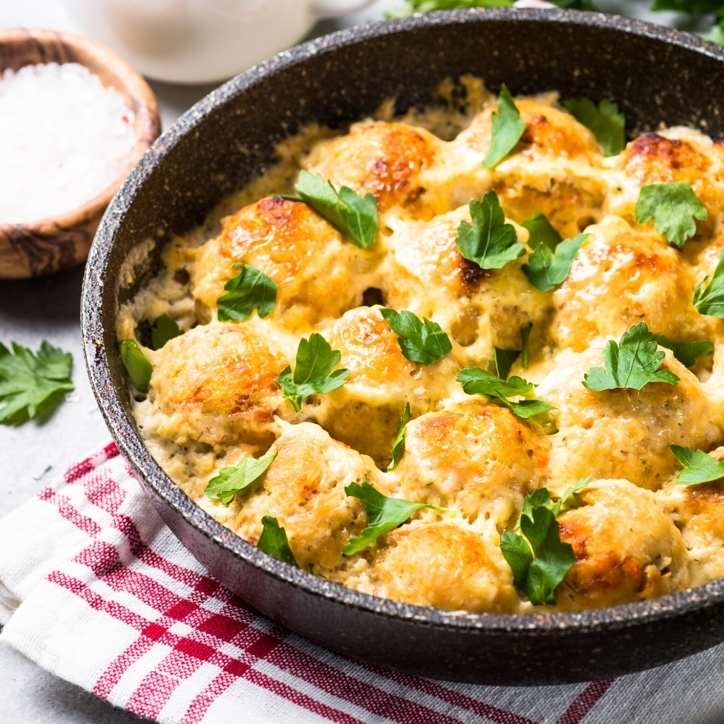

Mäsové guľky podľa @mojakucharocka — Normy Jedál
Vyskusajte mäsové guľky v syrovej omáčke. Je to nový level chuti ❤️
https://www.kucharocka.sk/recept/masove-gulky-v-syrovej-omacke/
.
#mojakucharocka #mojerecepty #varenieapeceniejelaska #kucharskakniha #fotokniha #recepty #personalizovanakniha #ulozitrecepty #tajomstvomojejkuchyne #rodinnerecepty #vlastnerecepty #vlastnakucharskakniha #masovegulky #syrovaomacka #syr #zapecenemasovegulky